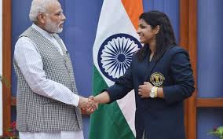

Awards And Recognition

Rajiv Gandhi Khel Ratna (2016) - highest sporting honour of India
Multiple cash prizes totaling over 5.7 crore (US$850,000) from the Indian Railways, the Indian Olympic Association, the Ministry of Youth Affairs and Sports, the Government of Delhi,various state governments, including Haryana, Madhya Pradesh,Uttar Pradesh, from private bodies such as the JSW Group and from political groups including the Indian National Lok Dal.
Promotion to gazetted officer rank by her employer, the Indian Railways.
Class 2 job offer from the Government of Haryana.
500 yd2 land grant from the Government of Haryana.
She has also received a brand new BMW from former Indian Cricketer Sachin Tendulkar.
Home Page
Next
Previous